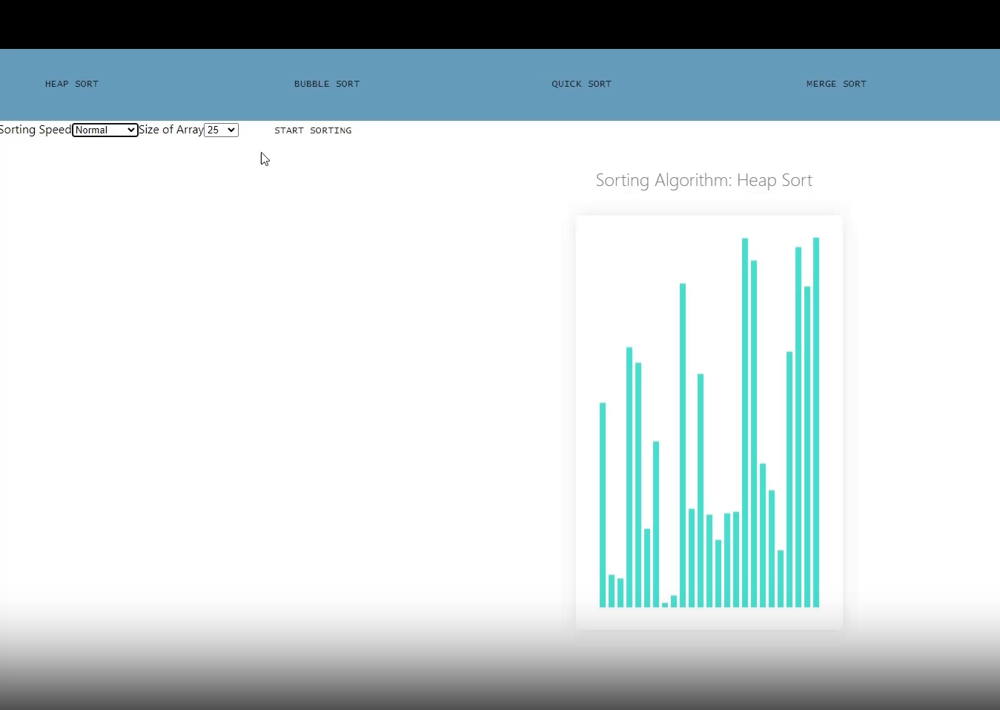

This sorting algorithm visualizer tool was created over my sophmore summer to help myself and my friends visualize how various sorting algorithms worked to sort data in real-time, as we were taking an algorithms class at the time. By being able to visually see each step of the algorithms play out, it helps the user determine the effectivness of these algorithms. Most importantly, it allows the user to visually see how much a particular algorithms solving time scales with input size.
Below is a brief explanation of the capabilities of the app.
The webpage allows you to select an array size for the unorganized data, adjust the speed of the solver, and choose the sorting algorithm to use. Once you’ve configured your preferences, you can run the solver, and the sorting algorithm will play out on the unorganized data in real-time. During the visualization, the indices (idx values) in the array that the algorithm is currently focusing on will be highlighted in red. As the algorithm determines that certain indices are in their sorted positions, they will be highlighted in green. The visualizer achieves this by capturing snapshots of the array after each iteration of the selected sorting algorithm. These snapshots are then refreshed on the webpage, allowing you to see the step-by-step progress of the sorting process.
As this project was my introduction into javascript, I used the entirety of the summer to create this web app on my own. Through the creation of the web app, I became proficient in the syntax of javascript, which was not too dificult as it is a mix of C++ and python in my opinion. However, more importantly, completing this project really helped me build my skills in component-based architecture since I used React to make the algorithms visual. Making the UI was by far the hardest part of the project, as the algorithms were done in the first few days. But creating the UI taught me to be efficient in my project and file organization, as well as taught me the basics of the virtual DOM.